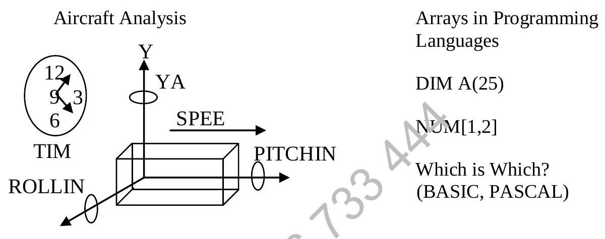
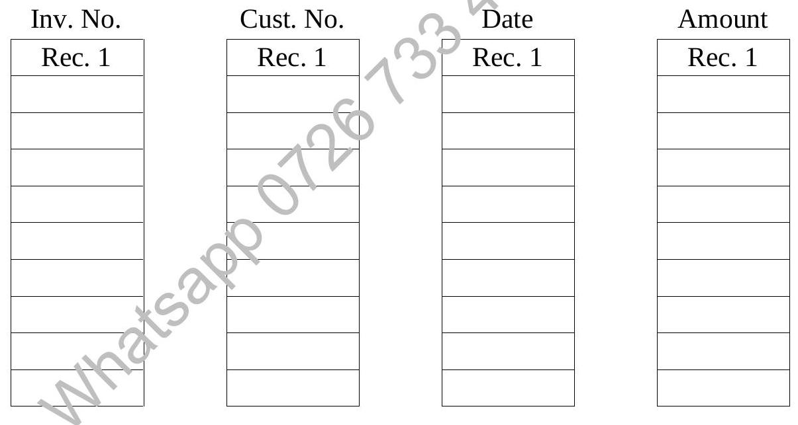

Chapter 7 : Data Structures (I) (Continued)
7.3 Arrays and Spreadsheets
It is especially easy to manipulate arrays using spreadsheets. It allows very quick calculation and re-calculation of large matrices. This allows 'WHAT IF' analysis to be performed. Try this out during your Lotus 1-2-3 lessons.
Arrays on paper is limited to 2 dimensional but multi-dimensional array can specify on spreadsheets and even in programming languages more than 2 dimensional arrays are required to store related variable. For example, in the analysis of aircraft movement such as pitching yaw and rolling.
How many Dimensional Array Required?
Ans: (1, 2, 3, 4 or 5)
Another use of the array is the storing numbers and string arrays respectively. String arrays can be operated on by concatenation of the elements in the respective arrays.
Array addresses, in the computer can be assigned by having two bytes for each number. For an array size of 4 * 7, the total number of bytes $4 \times 7 \times 2 = 56$, the first block of 14 bytes are the first row and next 14 bytes for the next row and so on.
7.3.1 Elementary Array Operations
(Examples of the use of arrays in Pascal programming.)
| Student Number | Science | Geography | History | Mathematics |
|---|---|---|---|---|
| 1307 | 46 | 58 | 24 | 49 |
| 1314 | 71 | 42 | 54 | 83 |
| 1318 | 24 | 17 | 20 | 19 |
| 1321 | 83 | 46 | 53 | 78 |
| 1327 | 75 | 58 | 62 | 88 |
| 1334 | 40 | 32 | 6 | 47 |
Example: {This program fills the array row by row.}
For Row := 1 to 6 Do
Begin
For Col := 1 to 5 Do
Readln(Table[Row, Col]);
End;Example: {This program fills the array column by column}
For Col := 1 to 5 Do
Begin
For Row := 1 to 6 Do
Readln(Table[Row, Col]);
End;7.4 Lists
A record consists of different data items stored in an array.
Below is a list consisting of four data items that are not linked. An example is given below.
Four lists which must stay 'linked'.
Four lists which must stay 'linked'
An Example of a Linked Record
Try the following quiz by matching the device to the explanation. This will provide a better understanding of linked records.
- Modem
- Front-End Processor
- Repeater
- Multiplexer
- A device used to receive signals from one circuit and automatically repeat and amplify and reshape the signals to another circuit. (Repeater)
- A system which removes some of the processing load from a central computer, typically handling communication coordination functions before the data is sent to the central system for processing. (Front-End Processor)
- A device which enables several terminals to share a single communication line. (Multiplexer)
- A device which converts digital signals to analogue signals and vice versa. (Modem)